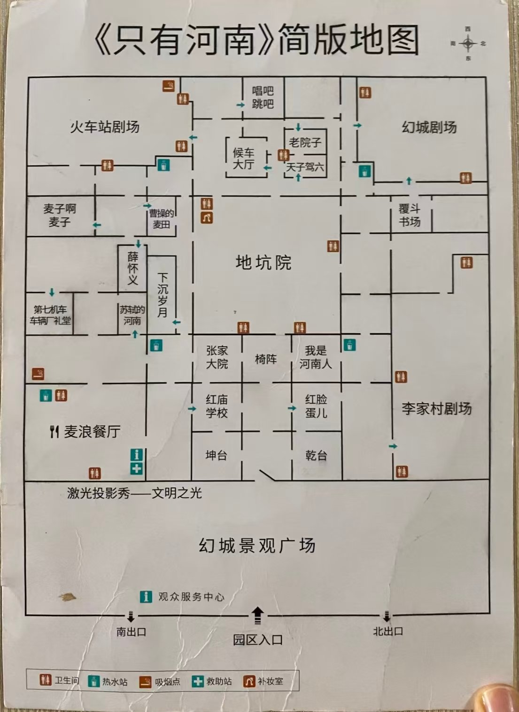

河南旅行 · Day 2–3
郑州中牟 · 两日通票 · 三场主剧锁在周三
入口在园区东侧，「文明之光」投影墙的正下方。住处到园区 3.6 km，管家班车 7–8 分钟，要提前一晚说好时间，别等出门才叫车。周三 09:45 上车，周四 11:05 上车、17:05 接回——这三趟 11/10 晚上一次约掉。

| 真实方位 | 场地 |
|---|---|
| 西南角（图左上） | 火车站剧场 |
| 西北角（图右上） | 幻城剧场 |
| 东北角（图右下） | 李家村剧场 |
| 东南角（图左下） | 麦浪餐厅 |
| 东侧（图下方） | 文明之光墙 · 幻城景观广场 · 园区入口 |
| 正中 | 地坑院 · 宋街（下沉式，有扶梯） |
地坑院是全场唯一的“穿堂”：出口分别写着「幻城／候车大厅／天子驾六／老院子」「麦浪餐厅／苏轼的河南／红庙学校」「下沉岁月／第七机车／曹操的麦田」「椅阵／李家村剧场／张家大院」。认出口比记路快。
示意图与官方地图同向（上西、下东、左南、右北），方便你拿着手机对着纸质图找位置。圆圈里的数字是停靠顺序，旁边小框里前面是开演时间、后面是场地。灰虚线是周四看完最后一场回出口的那一段。
前一晚已问过早餐价——在店里吃就在楼下解决，不用出门找。09:45 的车已约好，吃完直接上车。
3.6 km，7–8 分钟。
「文明之光」墙下面。顶门第一批，等 10:00 开园。
领纸质导览图、拍下当天节目单，然后直接往西走。别在入口拍照逗留，这是全天第一段长路。
顶门第一场，几乎不排队。散场即走，往西南 3 分钟到火车站剧场。
行进式，全程站着走。1942 大饥荒，与《李家村》是上下篇。10:48 到场门口排队，想站前排就早点站定。
往东北进城中心。
河南地方特色美食那一排。别去麦浪餐厅——它在东南角，从火车站过去要横穿整条南侧，吃完还得折回。12:45 必须起身。
穿过地坑院往东。
行进式，全园口碑最高、最催泪，备纸巾。剧场昏暗、有强光与音效，散场别急着接下一场。
散场出来后就是乾台、坤台一带。这段时间不是机动时间：刚站了 140 分钟，第二场主剧后半段的体力全押在这里。
全天最长的一段转场（东北角 → 南侧中段）。
露天实景。散场往东北 5 分钟到幻城剧场。
不加正剧。附近确实有《红脸蛋儿》16:20–16:47，但它正好顶掉幻城的排队时间（2300–3000 人，迟到只剩边角），评价又偏低——不去。
坐定式，2300–3000 人，提前 25 分钟去抢中区。这一场已预约成功，到门口刷身份证进。
唯一坐定的一场，光影穿越夏商周至明清。情绪轻，正好收尾。
幻城剧场门口就有餐饮，别走远——19:00 的投影在东侧墙上。
跟着人流走，方向就是出口。
就打在东侧入口那面夯土墙上。三场：18:30 / 19:00 / 19:30，19:00 这场时间最顺。
就待在墙下面：19:30 还有一场（19:30–19:56），原地再刷一遍，不用挪窝。
想换个口味的唯一无损选项是坤台（19:00–19:13，麦浪餐厅旁）——那就别看 19:00 这场投影，19:13 散场走过去刚好接 19:30 那场。
当日《张家大院》停演（剧目升级排练中），没有别的正剧可补。
投影墙外就是广场与入口，不用再穿园子。20:05 班车，20:15 到店。
主剧 200 分钟（65 + 75 + 60），其中站立走动 140 分钟；小剧场 60 分钟；走路约 4 km，横穿四次。所以：鞋穿最舒服的那双，14:15 那 35 分钟真的坐下，别拿去逛商铺。
10:55 前把电脑收完——别等督导结束再开始收，那是最容易松一下的时候。
已定：11:10 送园区、17:45 园区接回。11:00 结束直接下楼，车在门口等着。
两天票刷身份证直接进，不用换票。往西北走，别在入口逛——11:10 的车到门口是 11:18，走到剧场 11:26，只剩 4 分钟，一路直接走。
今天只有 11:30 / 12:30 / 15:20 / 16:30 / 18:20 五场，11:30 是第一场，进门正好接上。
若 11:26 到门口发现已坐满（小剧场不预约、坐满就停）：别硬挤，直接去麦田边坐着，12:20《麦子啊麦子》照旧；把《天子驾六》挪到 15:20 那场，用第 4 格《第七机车》去换——两场同为中等偏上，天子驾六口碑更稳。
今天换成 12:20 起，只有这一场在饭点前。下午那场挪到了 14:20，会跟下面全线撞车，所以必须放这里。散场往东南 9 分钟到麦浪。
比原计划晚 45 分钟，正好错开 12:30 的人流高峰。《苏轼的河南》就在麦浪旁边，吃完不用赶路。
全园评价最高的文戏。今天排满 7 场（11:10 起每小时一场），14:10 是最顺的一格。
这是今天唯一躲不掉的空档：第七机车今天第一场推到 12:30，中间能接的就是 15:20。别再塞别的小剧场，一塞晚上就赶。
铁路史题材，评价中等偏稳，不排队。散场往东北 6 分钟到薛怀义。
《薛怀义》在隔壁院子，16:05 过去排队足够。
演员戏好，第一档必看。这是今天最后一场。
薛怀义在园区中段，往东 10–12 分钟，路上就是宋街和麦浪。车 17:45 才发，不用快走。
晚上两场咨询到 20:20，先垫一口：宋街（正中）或麦浪（东南角）都顺路。不想吃就直接去门口坐着。
17:45 发车，提前 10 分钟到——接送班车不等人的。
3.6 km，7–8 分钟。
够用了：洗把脸、把材料摊开、坐两分钟。别再看手机里的剧评——18:30 要坐进咨询里听别人说话。
11/12 的场次不是 11/11 的复制，改了三处，全部都影响到原计划：
| 剧目 | 11/11（周三） | 11/12（周四） |
|---|---|---|
| 第七机车 | 11:30 / 14:20 / 15:20 | 12:30 / 14:20 / 15:20 / 17:30 |
| 麦子啊麦子 | 12:20 / 15:20 / 16:30 / 17:30 | 12:20 / 14:20 / 16:30 / 17:30 / 18:20 |
| 天子驾六 | 12:30 / 14:30 / 15:30 / 16:30 / 18:20 | 11:30 / 12:30 / 15:20 / 16:30 / 18:20 |
| 薛怀义 | 13:20 起 6 场 | 12:20 起 7 场 |
| 曹操的麦田 | 10:30 / 12:10 起每小时后移 10′ | 10:30 起每小时内整点，共 7 场 |
| 苏轼的河南 | 11:10–16:10 共 6 场 | 11:10–17:10 共 7 场 |
| 红脸蛋儿 / 红庙 / 候车大厅 / 下沉岁月 / 老院子 | 两天一致 | |
| 坤台 / 乾台 / 椅阵 / 覆斗书场 / 唱吧跳吧 / 文明之光 | 两天一致；张家大院仍是剧目升级排练中，停演 | |
17:45 的车多给了 40 分钟，但没有一场戏塞得进去：今天后面只剩 17:10《苏轼》（到 17:44）、17:30《第七机车》（到 18:02）、17:30《候车大厅》（到 17:55）、17:30／18:20《麦子啊麦子》——除《苏轼》外全部散场晚于发车时间，而《苏轼》17:44 散场、走过去已过点。所以这 40 分钟是缓冲，不是加戏的额度：慢慢出园、吃口东西、18:00 到店、30 分钟准备。
晚间室外场不再排：乾台、坤台、文明之光昨天已经看过；剩下的椅阵（18:20）、唱吧跳吧（17:30）、覆斗书场（18:30／19:10）都在发车之后开演，赶不上，也不用惦记。
晚间室外场不再排：乾台、坤台、文明之光昨天已经看过；剩下的椅阵（18:20）、唱吧跳吧（17:30）、覆斗书场（18:30／19:10）都在发车之后开演，赶不上，也不用惦记。
| 从 → 到 | 分钟 |
|---|---|
| 园区入口 → 候车大厅 / 天子驾六 | 7–8 |
| 园区入口 → 第七机车 | 6–7 |
| 候车大厅 → 火车站剧场 | 2–3 |
| 火车站剧场 → 地坑院 / 宋街 | 4–5 |
| 地坑院 → 李家村剧场 | 5–6 |
| 李家村 → 曹操的麦田 | 7–8 |
| 曹操的麦田 → 幻城剧场 | 5–6 |
| 幻城剧场 → 文明之光墙（东） | 7–8 |
| 第七机车 → 麦浪餐厅 | 3 |
| 麦浪餐厅 → 苏轼的河南 | 3 |
| 苏轼 → 薛怀义（隔一个院子） | 1–2 |
| 薛怀义 → 麦子啊麦子 | 2–3 |
| 麦子啊麦子 → 天子驾六 | 4–5 |
| 天子驾六 → 园区入口 | 7 |
园区是南北向铺开的一大块，四个大剧场各占一角，小剧场集中在中段与南侧。走路永远比想象的多——两天加起来一万五千步以上是常态。
周三 已排入周三 周四 已排入周四 ✕ 已决定不看。
这张表按 11/11 官方节目单地图逐步核对过，时间已不是推算值。《张家大院》当日在剧目升级排练中，全天停演。
这张只是 11/11 的表。11/12 的场次有三处变动（第七机车、麦子啊麦子、天子驾六），逐条列在周四那一节，别照这张排周四。每天进园前仍请拍一张当天节目单，以当日为准。
| 时间 | 剧目 | 时长 | 标记 |
|---|---|---|---|
| 10:10–10:37 | 红脸蛋儿 | 27′ | ✕ |
| 10:20–10:45 | 候车大厅 | 25′ | 周三 |
| 10:20–10:48 | 老院子 | 28′ | ✕ |
| 10:30–11:05 | 曹操的麦田 | 35′ | |
| 10:50–11:07 | 下沉岁月 | 17′ | ✕ |
| 11:00–12:05 | 火车站（主剧） | 65′ | 周三 |
| 11:00–12:15 | 李家村（主剧） | 75′ | |
| 11:10–11:38 | 老院子 | 28′ | ✕ |
| 11:10–11:44 | 苏轼的河南 | 34′ | |
| 11:20–11:48 | 红庙学校 | 28′ | ✕ |
| 11:30–12:02 | 第七机车车辆厂礼堂 | 32′ | |
| 11:40–11:57 | 下沉岁月 | 17′ | ✕ |
| 12:10–12:38 | 老院子 | 28′ | ✕ |
| 12:10–12:44 | 苏轼的河南 | 34′ | |
| 12:10–12:45 | 曹操的麦田 | 35′ | |
| 12:20–12:48 | 红庙学校 | 28′ | ✕ |
| 12:20–12:48 | 麦子啊麦子 | 28′ | |
| 12:30–12:52 | 天子驾六遗址坑 | 22′ | |
| 13:00–14:05 | 火车站（主剧） | 65′ | |
| 13:00–14:15 | 李家村（主剧） | 75′ | 周三 |
| 13:10–13:38 | 老院子 | 28′ | ✕ |
| 13:10–13:44 | 苏轼的河南 | 34′ | |
| 13:10–13:45 | 曹操的麦田 | 35′ | |
| 13:20–13:48 | 红庙学校 | 28′ | ✕ |
| 13:20–13:52 | 薛怀义 | 32′ | |
| 14:10–14:44 | 苏轼的河南 | 34′ | |
| 14:10–14:45 | 曹操的麦田 | 35′ | |
| 14:20–14:48 | 红庙学校 | 28′ | ✕ |
| 14:20–14:52 | 第七机车车辆厂礼堂 | 32′ | |
| 14:20–14:52 | 薛怀义 | 32′ | |
| 14:30–14:52 | 天子驾六遗址坑 | 22′ | |
| 15:00–16:05 | 火车站（主剧） | 65′ | |
| 15:10–15:44 | 苏轼的河南 | 34′ | |
| 15:10–15:45 | 曹操的麦田 | 35′ | 周三 |
| 15:20–15:47 | 红脸蛋儿 | 27′ | ✕ |
| 15:20–15:48 | 红庙学校 | 28′ | ✕ |
| 15:20–15:48 | 麦子啊麦子 | 28′ | |
| 15:20–15:52 | 第七机车车辆厂礼堂 | 32′ | |
| 15:20–15:52 | 薛怀义 | 32′ | |
| 15:30–15:52 | 天子驾六遗址坑 | 22′ | |
| 16:10–16:44 | 苏轼的河南 | 34′ | |
| 16:10–16:45 | 曹操的麦田 | 35′ | |
| 16:20–16:47 | 红脸蛋儿 | 27′ | ✕ |
| 16:20–16:48 | 红庙学校 | 28′ | ✕ |
| 16:20–16:52 | 薛怀义 | 32′ | |
| 16:30–16:52 | 天子驾六遗址坑 | 22′ | |
| 16:30–16:55 | 候车大厅 | 25′ | |
| 16:30–16:58 | 麦子啊麦子 | 28′ | |
| 17:00–18:00 | 幻城（主剧） | 60′ | 周三 |
| 17:20–17:47 | 红脸蛋儿 | 27′ | ✕ |
| 17:20–17:52 | 薛怀义 | 32′ | |
| 17:30–17:55 | 候车大厅 | 25′ | |
| 17:30–17:56 | 唱吧跳吧（室外） | 26′ | |
| 17:30–17:58 | 麦子啊麦子 | 28′ | |
| 18:20–18:27 | 椅阵（室外） | 7′ | |
| 18:20–18:42 | 天子驾六遗址坑 | 22′ | |
| 18:20–18:52 | 薛怀义 | 32′ | |
| 18:30–18:43 | 乾台（室外） | 13′ | |
| 18:30–18:55 | 覆斗书场（室外） | 25′ | |
| 18:30–18:56 | 唱吧跳吧（室外） | 26′ | |
| 18:30–18:56 | 文明之光（室外） | 26′ | |
| 19:00–19:13 | 坤台（室外） | 13′ | |
| 19:00–19:26 | 文明之光（室外） | 26′ | 周三 |
| 19:10–19:35 | 覆斗书场（室外） | 25′ | |
| 19:30–19:56 | 文明之光（室外） | 26′ | |
| — | 张家大院（室外） | — | 停演 |
晚间室外小场的确不少，但都是 7–26 分钟的过场戏，走哪儿看哪儿，不必进时间表：椅阵 18:20–18:27、乾台 18:30–18:43、坤台 19:00–19:13、唱吧跳吧 18:30–18:56、覆斗书场 18:30–18:55 / 19:10–19:35、文明之光 18:30 / 19:00 / 19:30。《张家大院》全天停演。
真正值得锁的只有《文明之光》——它就在出口那面墙上，是这一天最自然的收尾。想多看一场的话，坤台是唯一能无损塞进去的：它在麦浪餐厅旁，19:00–19:13 演完走到投影墙 5–7 分钟，正好接 19:30 那场。代价是放弃 19:00 这场投影——两场内容一样，不算损失。
| 剧目 | 为什么不去 |
|---|---|
| 红庙学校 | 与《只有红楼》的《37 中》是同一套课堂互动 + 回忆青春，看过红楼、对那段不感冒，等于已经看过。它还是全园排队最狠的一场，跳过省 30–40 分钟。 |
| 老院子 | 全河南话、现场收音小，听不懂就是干坐着看一群老人唠嗑。本地观众给 8.5 分，外地观众给 5 分。 |
| 下沉岁月 | 17 分钟，两份独立测评都给最低档 5 分，理由是“意义不明”；且 10:50 撞火车站排队、11:40 撞第七机车。 |
| 红脸蛋儿 | 同样 5 分、“表现一般”。当日 10:10 / 15:20 / 16:20 / 17:20 四场：16:20 那场散场 16:47，正好把幻城的排队窗口吃掉；其余分别撞火车站、曹操的麦田、晚饭。怎么排都赔。 |
排进来的 7 场（周三候车大厅、曹操的麦田；周四第七机车、苏轼、薛怀义、麦子、天子驾六），5 场是四份攻略共同认可，2 场是“中等但扎实”。没有一场落在偏弱档。
| 主剧 | 小剧场 | 站立 | |
|---|---|---|---|
| 周三 | 3 场 200′ | 2 场 60′ | 140′ |
| 周四 | — | 5 场 148′ | 0 |
| 合计 | 3 场 | 7 场 208′ | 140′ |